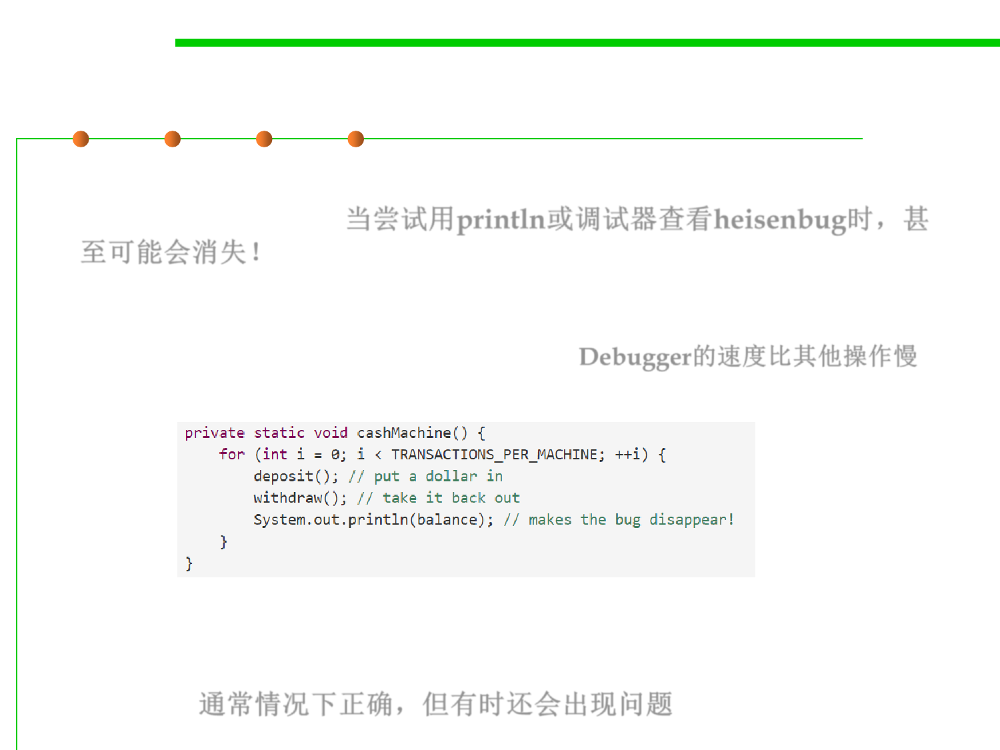

10.1 Concurrency and Thread-Safety
Concurrency is hard to test and debug !
▪ A heisenbug may even disappear when you try to look at it with
println or debugger! 当尝试用println或调试器查看heisenbug时，甚
至可能会消失！
– The reason is that printing and debugging are so much slower than other
operations, often 100-1000x slower, that they dramatically change the
timing of operations, and the interleaving. Debugger的速度比其他操作慢
▪ So inserting a simple print statement into the cashMachine():
…and suddenly the balance is always 0, as desired, and the bug
appears to disappear. But it’s only masked, not truly fixed. A change in
timing somewhere else in the program may suddenly make the bug
come back. 通常情况下正确，但有时还会出现问题